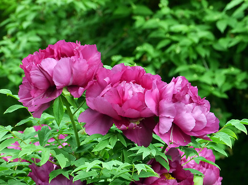
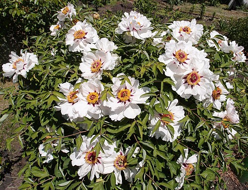

Выращивать древовидные пионы получается не у всех цветоводов-любителей. Между тем, растение это в целом не капризное, надо лишь знать правила агротехники. Во многом успех выращивания древовидных пионов зависит от правильной посадки.
Древовидные пионы бывают корнесобственные и привитые. У тех и у других есть свои достоинства и особенности, которые нужно учитывать при выращивании. В некоторых вопросах отличаются и требования к уходу.
При покупке корнесобственные и привитые пионы легко отличить по корням. У корнесобственных они многочисленные, длинные и относительно тонкие (около 5 - 8 мм в диаметре), имеют светло-коричневую окраску. Привитые пионы имеют толстые корни 4-5 см в диаметре (это корни подвоя – травянистого пиона).
Посадите на участке и корнесобственные пионы, и привитые. Пока одни развиваются и достигают возраста цветения, вторые будут активно цвести.
 